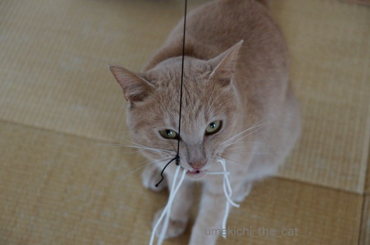
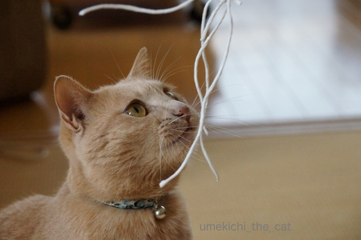

またまた100均手作りおもちゃ [梅吉]
大きくしなる釣竿状のおもちゃ。

竿の先にかかっている獲物は

わぁ〜、凶悪顔の梅吉さん。
釣り上がったらリリースしちゃいそう(⌒-⌒; )
100均で買ってきた紙紐。適当にまるめて竿の先にくくりつけたら遊ぶ遊ぶ・・・

真剣です。

おひげもまゆげも全部前！

必殺の一撃。
これが「手作りおもちゃ」と胸を張れる代物かは別として
喜んで遊んでもらえておかーさんは嬉しいですよ。
久しぶりにまとまった雨の降った土曜日。
傘を干しておくとやっぱり引き寄せられる梅吉さん。
あ、変身した(｣ﾟﾛﾟ)｣
･゜ﾟ･*:.｡..｡.:*･゜ﾟ･*:.｡. .｡.:*･゜ﾟ･*･゜ﾟ･*:.｡..｡.:*･゜ﾟ･*:.｡..｡.:*･゜ﾟ･*
大好きな時代小説「みをつくし料理帖」がNHKでドラマ化されています。
以前にも民放でドラマ化されていたようですが残念ながら未見。
その時の「澪」役は北川景子さん。
正直彼女は「澪」のイメージじゃありません。「あさひ太夫」がぴったりでは？
今回のドラマでは「澪」は黒木華さん。
これが私にとってはまさにはまり役！華ちゃんかわいい〜。
滅多にドラマを見ない私ですがこれは見ますよ！（録画ですが）
今後が楽しみです。

カフェオレ色の梅吉

梅吉 2023年8月10日 永眠


梅吉と出会った譲渡会

犬猫の理由なき殺処分ゼロ
妄想広告
UMEKICHI 光

爆発的に早い！
時々攻撃的！
Thanks to Mr.Boss365
爆発的に早い！
時々攻撃的！
Thanks to Mr.Boss365

喜んで貰えるおもちゃが一番ですよねー^^
竿の先にかかっている梅吉君の顔！！
こーゆー悪顔めっちゃ好みです^m^
あとは、しつこく何度も言うけど白目顔ねｗｗ えへへｗｗ
by リュカ (2017-05-15 15:52)
おもちゃを見上げる顔もいいけど、傘に引き寄せられる梅吉君！いいわぁ、可愛いわぁ♪うちも傘干そうかな～乾いてるケド(*^_^*)
by palpal (2017-05-15 16:27)
手作りのおもちゃで遊んでくれると嬉しいですよね(#^.^#)
梅吉さんが楽しそうで何よりです！
傘にちょこんと入っちゃう梅吉さんが可愛すぎます♪
by きぃ (2017-05-15 16:29)
手作りおもちゃ、ナイスですね！
猫にとってはシンプルなのが1番喜んでくれるような。
ダンボールまとめようと出してきたヒモ(タンカルテープ)とか…
澪つくし料理帖、珍しくうちのダンナが小説にはまってて、私も一緒に見ています。私は小日向さんのハゲオヤジが好きかな…
by BillK-ko (2017-05-15 18:24)
手作りヒモおもちゃ、いいですね！
ヒモの端を手で持って振り回すともれなく巻き添えになるので、これなら少し距離が保ててよさそうです(*^-^*)
傘も猫ホイホイになるとは♪ やってみよ～^^
by ゆきち (2017-05-15 18:27)
梅吉さん、真剣な眼差しですね。^^;
by yes_hama (2017-05-15 20:12)
凶悪顔の梅吉さん、初めてじゃないでしょうか（笑）
悪い顔でも、梅吉さんは梅吉さん可愛いです。
傘の中の梅吉さん、可愛いのに、なぜ変身したのかしら？
「みをつくし料理帖」滅多にドラマを観ませんが、これは私も録画組ですよ。
by kiki (2017-05-15 21:22)
きゃ！全然、凶悪なんかじゃなく、クールでセクシー。行く行くは、中条梅吉でにゃんこ必殺、太秦で撮影じゃー♪
by Ginger (2017-05-15 22:16)
うちでも傘を開いておくと、もれなく王子が捕れます(^^;
なんなんでしょうんねぇ。
紙紐かぁ…。ビニールより安心ですね。
100均に寄ってみます(^^)
by も〜 (2017-05-16 08:35)
梅吉くん釣り上げたい・・・
相傘したい（＾＾）
みをつくし料理帖は見たことないですが、黒木華さんなら期待出来そうですね～
あの子の演技好きです＾＾
by muku (2017-05-16 09:40)
梅吉ブラック参上！
て感じ。
by じゅらまろ (2017-05-16 15:39)
わ、ほんとに、おひげもまゆげも全部前！
迫力なお顔ですね～＾＾
ありゃ、みをつくし料理帖、始まってたんですね～。
次から見ます＾＾；
前のも見ましたが‥黒木華さんのほうが合うなと思ってましたよ＾＾
by sana (2017-05-17 00:09)
私も自分で100均店まで行けたら
ワンちゃんの小道具を漁って来るでしょう・・(笑)
梅吉ちゃんの眼力すごいです(＾◇＾)
by makkun (2017-05-17 15:04)
リュカさん＞そうそう！紙の切れっ端でも喜んでくれれば満足で〜す。
白目顔好き、私と同じねぇ(〃▽〃)
梅吉はなぜか夏になると白目がちに・・・これからの季節期待してて！ww
palpalさん＞半分お布団をめくったこたつに吸い込まれてゆくにゃんこもかわいいけど
傘に吸い込まれてゆくのも可愛いんだから〜。ぜひやってみて〜！！
きぃさん＞手作りなんて言っていただけると照れるわぁ(〃▽〃)
安上がりなのも魅力の一つですww
BillK-koさん＞シンプルに「ひも」が一番飽きずに遊んでくれるかも〜。
それもダンボールまとめよう、とか作業している「ひも」に
一番食いついて来ますよね＾＾作業進まないっちゅうねん！！（喜んでる・・・
BillK-koさん、渋好みだったのね〜(〃▽〃)小日向さんいい味出してるしね！
by ちぃ (2017-05-17 16:14)
ゆきちさん＞なによりチープなおもちゃを喜ぶ梅吉です^^;
おもちゃを手で振り回すと巻き添え＆爪の餌食になるので
距離感は大切で〜すww
yes_hamaさん＞おもちゃを追う時は真剣そのものです！！
ご飯の時もです・・・^^;
kikiさん＞凶悪顔でもかわいいなんて嬉しいお言葉♪
梅吉普段は目つき悪いんですよ〜。今度その写真もupしちゃおうっと。
変身は、ねこまたになる練習をしているのかもしれません＾＾
みおつくし仲間、わぁ〜い(ﾉ≧▽≦)ﾉ
Gingerさん＞楽屋の入り口には紫紺に白で「梅吉」と染め抜いた
のれんを掲げたいわぁ〜(〃▽〃)
必殺時の通り名は「爪牙の梅吉」でよろしいかしら(^_－)☆
by ちぃ (2017-05-17 17:10)
も〜さん＞王子も傘に吸い込まれるのですね〜。
何がそんなに魅力的なんだろうと（顔だけ）一緒に入ってみたのですが
理由はよくわからず、梅吉にも嫌な顔をされました(꒦ິ⌑꒦ີ)
紙紐、ビニールよりは齧っても安心かなと思って買いましたよ＾＾
mukuさん＞釣り上げたらガブ〜、相傘もガブ〜となると思いますが
よろしいでしょうか〜^^;
梅吉、悪意はないんですがガブリエルなんです・・・親愛のガブ〜^^;
じゅらまろさん＞まさにそれですわ！ブラック梅吉、黒梅吉。
たまにじゃなくて頻繁なのが大変です^^;
sanaさん＞おひげもまゆげもすぐにこんなになってしまうので
ポーカーフェイスとは無縁の梅吉です＾＾
クールビューティーな澪の「みをつくし」をご覧になったのですね。
澪が北川景子さん、あさひ太夫が貫地谷しほりさん・・・・
逆でも良いですよね〜。
makkunさん＞我が家の周りは100均の宝庫なんですよ〜。
ついついふらりと立ち寄ってしまいます^^;
わんこのおもちゃになりそうなのも沢山あります！
梅吉、真剣になると目が雷神さんみたいになります。神がかってる？ww
by ちぃ (2017-05-17 20:40)